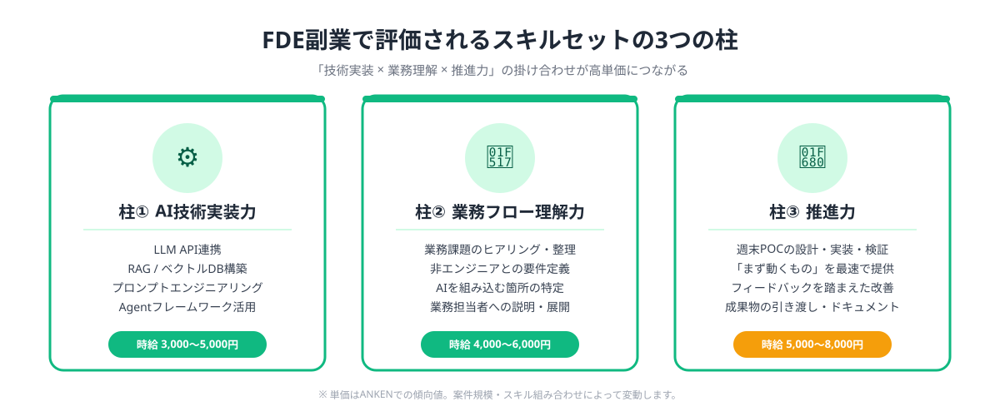
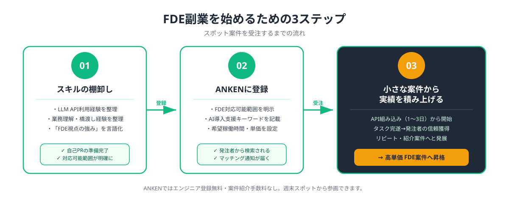

FDEとは何か？副業でどう需要されているか
FDE（Forward Deployed Engineer＝フォワード・デプロイド・エンジニア）は、元々シリコンバレーのAIスタートアップで生まれた職種です。技術者が企業の現場に「前線配備（Forward Deployed）」され、AIプロダクトの導入・カスタマイズ・社内展開を技術と業務の両面から支援します。以前の記事でも紹介した通り、日本でも2026年から大手企業・中堅企業を中心にFDE的な役割への需要が急増しています。
注目すべき点は、FDEの仕事の多くがスポット・プロジェクト単位の依頼に向いていることです。「ChatGPTを社内の業務フローに組み込む」「RAG（検索拡張生成）の試作環境を1週間で構築する」「AIツール導入のためのデータ整備と検証を行う」といった案件は、正社員を新規採用するより、スキルを持つエンジニアにスポット発注する方が企業側にとっても合理的です。ANKENに寄せられる発注案件でも、FDE的な役割を求める依頼が急速に増加しています。
FDEに求められるスキルセット3つの柱
FDE的な副業案件で評価されるスキルは、大きく3つの柱に分けられます。純粋な開発技術力だけでなく、業務理解力とコミュニケーション能力が組み合わさることが、高単価受注につながります。

柱①：AI技術実装力——LLM API（OpenAI・Anthropic・Google等）の呼び出し、プロンプトエンジニアリング、RAG構築、Agentフレームワーク（LangChain・CrewAI等）の基礎、ベクトルDB（Pinecone・Chroma等）の操作などが該当します。「AIを使える」から「AIを作れる・組み込める」レベルのスキルが求められます。
柱②：業務フロー理解力——企業の現場業務（営業・カスタマーサポート・経理・採用等）の流れを素早く把握し、「どこにAIを組み込むと効果が出るか」を提案できる力です。エンジニアとしての技術知識と、現場担当者の言葉を翻訳するブリッジ力が評価されます。
柱③：スモールスタート推進力——POC（概念実証）の設計・実装・検証を短期間（1〜2週間）で完結させ、「まず動くものを作る」サイクルを回す推進力です。完璧な設計より、動くプロトタイプを素早く提供することが、スポット案件の評価軸になります。
スポット副業でFDE案件を受注する3ステップ
FDE的なスポット案件を安定して受注するための実践的なステップを紹介します。経験ゼロからでも、3ステップで最初の案件に到達できます。

- STEP 1：スキルの棚卸しと「FDE視点の強み」を整理する
- STEP 2：ANKENにエンジニアとして登録し、FDE的な対応可能範囲を明示する
- STEP 3：小さな案件から受注し、実績と信頼を積み上げる
STEP 1：スキルの棚卸しは、LLM APIの利用経験、業務系システムの開発経験、コミュニケーション能力の3軸を整理することです。「ChatGPT APIを使ったことがある」「社内向けSlackボットを作ったことがある」「非エンジニアの担当者と要件定義をしたことがある」といった経験が、FDE案件のマッチングに直結します。
STEP 2：ANKENへの登録では、プロフィールに「AI導入支援・FDE的な業務が可能」「POC設計・LLMアプリ開発・社内展開支援に対応」といった形で、FDE視点のスキルを明示することが重要です。発注者が「FDE」「AI導入支援」といったキーワードで検索したときに引っかかりやすくなります。
STEP 3：小さな案件からというのは、最初から「AIシステム全体の設計・構築」を狙わず、「既存ツールへのOpenAI API組み込み（1〜3日）」「社内向けプロンプトテンプレートの設計・検証（半日）」といったタスク単位の小さな案件から実績を積み上げることを指します。実績がつくと発注者からのリピート・紹介案件につながります。
週末スポット稼働でできるFDE案件の具体例
「FDEといっても、土日スポットでできることは限られるのでは？」という疑問をよく聞きます。しかし実際には、週末2日間でも完結できるFDE的な案件が多くあります。ANKENで発注される案件の傾向をもとに、代表的な例を挙げます。
①社内向けChatGPTラッパーの構築（土日2日）：企業のSlackやNotionと連携した、社内業務特化のChatGPTインターフェースを構築します。システムプロンプトの設計と簡単なAPIラッパーの実装で、1〜2日で動作するものを提供できます。
②RAG（社内文書検索AI）のPOC構築（土日2〜3日）：社内マニュアルやFAQのPDFを取り込み、自然言語で検索・回答できる試作環境を構築します。LangChainとChromaDB（またはOpenAI Embeddings）の組み合わせで、週末に動くデモを作れます。
③AIプロンプトの業務設計・検証支援（半日〜1日）：企業が導入済みのChatGPT/Claudeをより業務に合った形で使えるよう、プロンプトテンプレートを設計・テストします。コードよりドキュメント・ワークショップ形式の業務で、コーディングよりコンサルティング寄りのスポット案件です。
④AI議事録・要約システムの試作（土日2日）：ZoomやTeamsの録画・音声データをWhisperで文字起こしし、GPT-4で構造化議事録・アクションアイテムを自動生成するスクリプトを構築します。議事録作成の工数削減ニーズが非常に多い分野です。
FDEスキルを磨きながら副業収入を得るメリット
FDE的な副業・スポット案件を受注することの最大のメリットは、「実際の業務課題」に触れながらスキルを磨けることです。個人学習や社内開発では出会えない、多様な業種・業務フロー・データ環境を経験することで、AIエンジニアとしての引き出しが急速に広がります。
報酬面でも、FDE的なスキルを持つエンジニアへの発注単価は上昇傾向にあります。純粋なコーディング案件（時給2,000〜3,000円が相場）に対し、AI導入支援・FDE的な案件では時給4,000〜8,000円の範囲での発注が増えています。これは「技術実装」に加えて「業務理解・提案・推進」の価値が加わるためです。
また、FDE的な案件はリピートが発生しやすいのも特徴です。「POCを作ったら、次は本格導入の設計も相談したい」「別の部署でも同じ仕組みを使いたい」といった形で、継続的な関係に発展しやすいです。週末スポットから始め、本格的なパートタイム・業務委託へ発展するケースも多くあります。
💡 FDEスキルを「作れる」レベルに引き上げるには？
ANKENでスポット案件を受注しながらスキルアップする方法については、「AI副業で一石二鳥のスキルアップ術」も合わせてご参照ください。
よくある質問
- Q. FDEスキルは副業でどう活かせますか？
- A. AI導入支援の需要が高まる中、週末スポット案件でFDE的な役割を担い高単価収入を得られます。
- Q. FDEに求められるスキルは何ですか？
- A. 技術実装力、業務理解力、顧客とのコミュニケーション力の3つが柱になります。
- Q. 未経験からFDE系の副業案件は受けられますか？
- A. 基礎的な開発経験があれば、小さな案件から徐々にFDE的な役割の経験を積めます。
まとめ・ANKENでFDE副業を始める
FDE（フォワード・デプロイド・エンジニア）は2026年の副業・スポット市場で最も注目度の高い役割の一つです。「AI技術実装力」「業務フロー理解力」「スモールスタート推進力」の3つの柱を意識してスキルを整理し、ANKENに登録することで、週末スポット稼働からFDE案件の受注を始められます。
最初は小さなタスク（API組み込み・プロンプト設計・POC構築）から始め、実績を積み上げることが安定した高単価副業への最短ルートです。ANKENでは、FDE的なスキルを求める発注者案件が増加しており、「AI技術力 × 業務支援」の経験を持つエンジニアを優先的にマッチングしています。
ANKENにエンジニア登録することで、AI導入支援・FDE的なスポット案件とマッチングできます。週末2日〜、タスク単位から参画可能。登録無料。
👉 エンジニアとして無料登録する現在の本業を続けながら週末スポットから始められます。